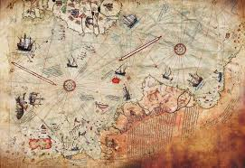

ATLANTIS
Introduction
Atlantis, a likely mythical island nation mentioned in Plato’s dialogues “Timaeus” and “Critias,” has been an object of fascination among western philosophers and historians for nearly 2,400 years. Plato (c.424–328 B.C.) describes it as a powerful and advanced kingdom that sank, in a night and a day, into the ocean around 9,600 B.C. The ancient Greeks were divided as to whether Plato’s story was to be taken as history or mere metaphor. Since the 19th century there has been renewed interest in linking Plato’s Atlantis to historical locations, most commonly the Greek island of Santorini, which was destroyed by a volcanic eruption around 1,600 B.C.
Literary
Plato (through the character Critias in his dialogues) describes Atlantis as an island larger than Libya and Asia Minor put together, located in the Atlantic just beyond the Pillars of Hercules—generally assumed to mean the Strait of Gibraltar. Its culture was advanced and it had a constitution suspiciously similar to the one outlined in Plato’s “Republic.” It was protected by the god Poseidon, who made his son Atlas king and namesake of the island and the ocean that surrounded it. As the Atlanteans grew powerful, their ethics declined. Their armies eventually conquered Africa as far as Egypt and Europe as far as Tyrrhenia (Etruscan Italy) before being driven back by an Athenian-led alliance. Later, by way of divine punishment, the island was beset by earthquakes and floods, and sank into a muddy sea.
Plato’s Critias says he heard the story of Atlantis from his grandfather, who had heard it from the Athenian statesman Solon (300 years before Plato’s time), who had learned it from an Egyptian priest, who said it had happened 9,000 years before that. Whether or not Plato believed his own story, his intent in telling it seems to have been to boost his ideas of an ideal society, using stories of ancient victory and calamity to call to mind more recent events such as the Trojan War or Athens’ disastrous invasion of Sicily in 413 B.C. The historicity of Plato’s tale was controversial in ancient times—his follower Crantor is said to have believed it, while Strabo (writing a few centuries later) records Aristotle’s joke about Plato’s ability to conjure nations out of thin air and then destroy them.
It is mentioned in the dialogues Timaeus and Critias. He described it as a great island beyond the Pillars of Hercules (the Strait of Gibraltar), with tremendous naval power. He said that it collapsed and sank in a day and a night due to the corruption and greed of its inhabitants.
Many bloggers and writers in recent centuries have claimed that Atlantis possessed advanced energy, lethal weapons, or knowledge of engineering and electricity beyond our own.
There are those who link it to the origin of all ancient civilizations such as Egypt, Maya, Inca, and Sumer.
The inhabitants of Atlantis are said to have used massive crystals to generate unlimited energy (electricity, healing power, or even flight technology).Some bloggers link it to the idea of a "blue crystal" that is said to have sunk with the island, and will be extracted in the future to restore free energy to humanity.
Some bloggers link it to the idea of a "blue crystal" that is said to have sunk with the island, and will be extracted in the future to restore free energy to humanity.
Some blogs say the reason is a moral deviation: its inhabitants were excessively greedy and powerful, so God punished them (similar to the story of the flood in the Bible).
There is an extract from an ancient writer referring to the islands in the sea beyond the Pillars of Hercules (the Strait of Gibraltar), and he says that the inhabitants of one of these islands had a tradition from their ancestors of a very large island called Atlantis, which ruled for a long time over all the islands of the Atlantic Ocean.
Marcellus speaks of seven islands in the Atlantic, and states that their inhabitants preserve the memory of a much greater island, Atlantis, "which had for a long time exercised dominion over the smaller ones."
Diodorus Siculus relates that the Phœnicians discovered "a large island in the Atlantic Ocean beyond the Pillars of Hercules several days' sail from the coast of Africa."
In some modern myths, Atlantis is said to still exist under a glass dome at the bottom of the sea, or that its inhabitants survived and moved to another dimension.
A myth says the Bermuda Triangle is a technological gateway left behind by the inhabitants of Atlantis. The reason for the disappearance of ships and planes is the remaining power systems of their civilization. Some blogs claim that an entire city lies beneath Bermuda, surrounded by a transparent dome.
In the myths of Atlantis, and in some works of H. P. Lovecraft, it is believed that the inhabitants of the sunken continent did not vanish entirely after the catastrophe, but transformed into mysterious sea creatures. In some popular tales, the women of Atlantis are described as mermaids, and the men as mermen, capable of living among the ocean waves. In Lovecraft’s world, there are creatures known as the "Deep Ones," half-human, half-aquatic beings living in the ocean depths, occasionally interacting with humans through mating or alliances. This transformation symbolizes the idea of Atlantis’s civilization continuing in a hidden and mysterious way; the flood did not erase its legacy completely, but left a subtle mark in the ocean depths, where these supposed inhabitants continue to influence the world behind a veil of mystery and water. Thus, myths blend lost reality with marine fantasy, creating a captivating image of a civilization that did not entirely perish, but transformed into a new form of life.
The Gauls possessed traditions of Atlantis which were collected by the Roman historian, Timagenes, who lived in the first century, B.C. Three distinct peoples apparently dwelt in Gaul. First, the indigenous population (probably the remains of a Lemurian race), second, the invaders from the distant island of Atlantis, and third, the Aryan Gauls (see Pre Adamites, p. 380).
Amongst the Indians of North America there is a very general legend that their forefathers came from a land "toward the[15] sun-rising." The Iowa and Dakota Indians, according to Major J. Lind, believed that "all the tribes of Indians were formerly one and dwelt together on an island ... towards the sunrise." They crossed the sea from thence "in huge skiffs in which the Dakotas of old floated for weeks, finally gaining dry land."
In recent years, a modern theory has emerged suggesting that Atlantis was not located in the Atlantic Ocean as Plato described, but on the continent of Antarctica before it froze. According to this idea, the continent once had a temperate climate and was inhabited by an advanced civilization, before catastrophic climatic changes caused it to become completely frozen. Proponents of this theory claim that certain unusual rock formations and ancient maps may indicate the existence of traces of civilization beneath the ice, and that Plato’s description of Atlantis could be interpreted as an account of a place that disappeared thousands of years ago. Nonetheless, scientific evidence remains limited, and this theory is classified as alternative or speculative, yet it continues to intrigue enthusiasts of myths and mysterious explorations.
Some modern theories about Atlantis use the famous Piri Reis Map as evidence that Antarctica was inhabited and temperate thousands of years ago. Drawn in 1513, the map depicts the coasts of South America and the northern part of Antarctica in a peculiar way, as if the continent was free of ice at that time. Supporters of the theory suggest that this could indicate the presence of Atlantis there, and that an ancient civilization once thrived on these lands before major glacial shifts and catastrophic climatic changes. However, scientists explain that the Piri Reis Map is based on information from older maps and scattered observations by various sailors, containing inaccuracies and rough estimations of distances. Therefore, it cannot be considered direct scientific evidence of a sunken civilization or an ice-free continent. Nevertheless, the idea remains intriguing to enthusiasts of myths and mysterious explorations.

In the British Museum there is a remarkable document - known as the Troano manuscript - which was written over 3,500 years ago by the Mayas of Yucatan, containing an authentic account of the cataclysm which sank the continent of Atlantis. This priceless document contains the following statement according to the translation by Le Plongeon: "In the year 6 Kan, on the 11th Mulac in the month Zac, there occurred terrible earthquakes, which continued without interruption until the 13th Chuen. The country of the hills of Mud, the land of Mu, was sacrificed; being twice upheaved it suddenly disappeared during one night, the basin being continually shaken by volcanic forces. Being confined, these caused the land to sink and to rise several times and in various places. At last the surface gave away and ten countries were torn asunder and scattered; unable to stand the force of the convulsions, they sank with their 64,000,000 inhabitants.
In ancient history, there is a tragic story that evokes the doom of Atlantis. What makes matters even more interesting is that it happened during Plato's lifetime. The city-state of Heliconia, located on the shores of the northern Peloponnese, was a major regional naval power. Its sailors sailed the Mediterranean and established colonies in Asia Minor and southern Italy. Unsurprisingly for such a naval power, the city's chief god was Poseidon, whose image was carved on coins and whose temple was second only to that of Delphi. The colossal bronze statue of Poseidon was a source of pride for the citizens and a work of art. Unfortunately, it was also the "bringer of doom." When the Ionians requested a copy of the famous statue, the Heliconians refused.
A custom which differs considerably from our own must be instanced next, in their choice of food. It is an unpleasant subject, but can scarcely be passed over. The flesh of the animals they usually discarded, while the parts which among us are avoided as food, were by them devoured. The blood also they drank—often hot from the animal—and various cooked dishes were also made of it
It must not, however, be thought that they were without the lighter, and to us, more palatable, kinds of food. The seas and rivers provided them with fish, the flesh of which they ate, though often in such an advanced stage of decomposition as would be to us revolting. The different grains were largely cultivated, of which were made bread and cakes. They also had milk, fruit and vegetables
A small minority of the inhabitants, it is true, never adopted the revolting customs above referred to. This was the case with the Adept kings and emperors and the initiated priesthood throughout the whole empire. They were entirely vegetarian in their habits, but though many of the emperor's counsellors and the officials about the court affected to prefer the purer diet, they often indulged in secret their grosser tastes.
TV Scenes
The ending phase of the original Yugioh series involved the Pharaoh Atem settling an old priest war against a surviving magician from Atlantis; Dartz. Dartz’s goal was to revive The Leviathan using the power of Orichalcos. Orichalcum is a metal primarily consisting of Copper and Zinc used by Atlantean civilization. The power of Orichalcos Dartz was using the psychic power of Vitriol/Vril from the Black Sun.It is possible that ancient weapons of warriors, priests, and magicians during Atlantean times was Orichalcum designed to concentrate Vril energy considering the copper content.Some legendary weapons from mythology, like the Vajra, are Orichalcum and magical based. A character that was under Dartz control, was Alister, implying Aleister Crowley. The symbol of the Orichalcos is the unicursal hexagram, the symbol of Aleister Crowley’s Order of Thelema.Crowley’s signature saying was “Do What Thou Wilt” which is the willpower of the heart/Green Lantern but in Crowleyian context, a corrupted inverted heart. The Thelemite symbol is an alteration of the Anahata/Star of Vishnu. Some accounts say the fall of Atlantis was caused by Black Magicians abusing their power (possibly black Tantra), which Crowley may have invoked considering the Yugioh connection. Referencing Pyramids of Montauk by Peter Moon
location
Morocco
German scientist and expert Michael Hubner, who studied 51 references in ancient texts to determine the location of the legendary city since 2008, relying on a number of historical keys and references, including Plato’s dialogues in Timaeus and Critias, which talk about Atlantis in detail. Hubner concluded that a tsunami flooded the city, turning it into ruins, and the sea returned. .Other clues that Hubner extracted from ancient texts indicate that Atlantis was not located in Europe. Through electronic analysis, Hubner concluded that the Souss-Massa plain in Morocco... uniquely combines the features and terrain that describe the city of Atlantis.Hubner didn't locate the site first, but used a computer to match the variables to a network of 400 subregions. After comparing the different signals and keys, the Souss-Massa plain stood out from the others. This prompted Hubner to travel and see the place for himself. In Morocco, the researcher discovered a basin only 11 km from the sea. In the middle of it, a large mound rose, evoking Plato's description of the capital of Atlantis.
Ignatius Donnelly, in his book "Atlantis: The Antediluvian World" (1882), presented a comprehensive vision that treated Atlantis as a real civilization rather than just a myth, considering it the origin of all ancient cultures. Donnelly argued that Atlantis was an advanced center of science, agriculture, engineering, and religion, from which knowledge spread to Egypt, the Maya, the Inca, and the Phoenicians. He believed that the catastrophe which destroyed Atlantis was the same great flood described in myths and sacred texts, and that its memory echoed across world mythologies. He also pointed to the similarities between the Egyptian pyramids and those of Central America as evidence of a common source. Donnelly located Atlantis in the Atlantic Ocean near the present-day Azores Islands, claiming that its people were the parent race that later spread across other continents. His ideas left a profound impact on Western thought and became the foundation for modern spiritual movements and theories of “lost civilizations.”
Helena Blavatsky, the spiritual mystic and founder of Theosophy, considered the inhabitants of Atlantis to be part of advanced human races that preceded our current civilization. In her works, she described the Atlanteans as a highly developed root race endowed with spiritual powers, psychic abilities, and deep esoteric knowledge. She believed that they once possessed wisdom and technologies far beyond what we know today, but their misuse of these powers led to their downfall and the submergence of Atlantis. According to Blavatsky, traces of their wisdom were later transmitted to ancient civilizations such as Egypt and India, shaping the foundations of sacred traditions and occult teachings. Her interpretation connected Atlantis not only to history but also to a cosmic spiritual cycle, in which human races rise and fall as part of a greater evolutionary journey of the soul.
Edgar Cayce, often called the "Sleeping Prophet," predicted that the secrets of Atlantis would resurface in modern times. In his trance readings, he specifically mentioned that evidence of Atlantis would be discovered near the Bahamas, particularly in the area now known as the Bimini Road. This underwater rock formation, found in the 1960s, was interpreted by some as a remnant of Atlantean structures, possibly roads or walls. For Cayce, such discoveries were not just archaeological but also spiritual signs, heralding the return of Atlantean knowledge and a new era of human awakening. His prophecy made Bimini a focal point for alternative researchers and explorers searching for proof of the lost continent.
The Nazis, especially Heinrich Himmler (head of the SS), adopted the idea that the people of Atlantis were not just a myth but represented the pure Aryan race. They believed the Atlanteans were tall, strong, blond-haired, and spiritually powerful, and that they were the ancestors of the Aryan race the Nazis sought to revive. Through institutions like the Ahnenerbe, the Nazis carried out research and expeditions in Tibet, Iceland, and other regions in search of "evidence" of Atlantis as the cradle of racial superiority. This belief became part of the Nazi racial ideology, linking the Atlantis myth to their political project and justifying their claims of dominance by portraying themselves as the direct heirs of that legendary race.
people
Stories describe its inhabitants as giants or with blond hair and blue eyes (this was later linked to Nazi myths that considered the Aryans descendants of the Atlanteans).
Some said they were more spiritually advanced humans with mental abilities such as telepathy and psychokinesis.
Professor Retzius, in his Smithsonian Report, considers that the primitive dolichocephalæ of America are nearly related to the Guanches of the Canary Islands, and to the population on the Atlantic seaboard of Africa, which Latham comprises under the name of Egyptian-Atlantidæ. The same form of skull is found in the Canary Islands off the African coast and the Carib Islands off the American coast, while the colour of the skin in both is that of a reddish-brown.
A remarkable fact about the American Indians, and one which is a standing puzzle to ethnologists, is the wide range of colour and complexion to be found among them. From the white tint of the Menominee, Dakota, Mandan and Zuni tribes, many of whom have auburn hair and blue eyes, to the almost negro blackness of the Karos of Kansas and the now extinct tribes of California, the Indian races run through every shade of red-brown, copper, olive, cinnamon, and bronze. (See Short's North Americans of Antiquity, Winchell's Pre-Adamites, and Catlin's Indians of North America; see also Atlantis, by Ignatius Donnelly who has collected a great mass of evidence under this and other heads.) We shall see by and by how the diversity of complexion on the American continent is accounted for by the original race-tints on the parent continent of Atlantis.
language
Atlantis as we shall see is said to have been inhabited by red, yellow, white and black races. It is now proved by the researches of Le Plongeon, De Quatrefages, Bancroft and others that black populations of negroid type existed even up to recent times in America. Many of the monuments of Central America are decorated with negro faces, and some of the idols found there are clearly intended to represent negros, with small skulls, short woolly hair and thick lips. The Popul Vuh, speaking of the first home of the Guatemalan race, says that "black and white men together" lived in this happy land "in great peace," speaking "one language." (See Bancroft's Native Races, p. 547.) The Popul Vuh goes on to relate how the people migrated from their ancestral home, how their language became altered, and how some went to the east, while other travelled west (to Central America).
The writing material of the Atlanteans consisted of thin sheets of metal, on the white porcelain-like surface of which the words were written. They also had the means of reproducing the written text by placing on the inscribed sheet another thin metal plate which had previously been dipped in some liquid. The text thus graven on the second plate could be reproduced at will on other sheets, a great number of which fastened together constituted a book.